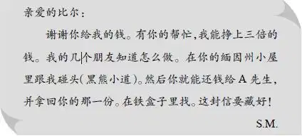

The Tin Box
在孩子们望穿秋水、度日如年的时候，大乔和爱丽丝终于回来了，还开回一辆崭新的旅行车。他们把车停在了前门。
“是大乔！”班尼欢呼着跑下台阶，“他开了辆新旅行车！喂，大乔，你们只有两个人，为什么要买旅行车呢？”
“你猜啊！”大乔笑着跳下车，伸手去扶他年轻漂亮的妻子。
很快，另外几个孩子也跑出来迎接大乔和爱丽丝了。他们嬉闹着，将旅行包和箱子抬进屋子里。望望愉快地叫着、跳着，似乎想让大家知道，和大乔久别重逢，它也非常开心。
“我敢说，你们买旅行车是为了带我们一起去玩！”班尼说。
“没错！”爱丽丝笑着对班尼说，“我们一起乘车旅行肯定会非常开心！”
“我们已经想好第一站去哪里了，”班尼接着说，“你们想知道吗？”
“孩子们，孩子们！先让爱丽丝坐一会儿，”奥登先生走到大厅里说，“你们有的是时间，不用着急。爱丽丝，快进来休息一会儿，让他们自己聊吧！”
可是孩子们等不急了，他们七嘴八舌，很快就说出了黄色小屋的秘密。
“原来是这么个故事！”大乔说，“我对那房子好奇很久了，也想去看看呢！”
“我们想等你们回来一起去。”亨利说。
“你们俩都愿意去吗？”杰西问。
“当然。”爱丽丝说。
大乔笑了起来：“哈，看来咱们马上又要重返奇异岛了。”
“今天就去吗？”班尼激动地问。
“对，今天就出发！”大乔和爱丽丝一起回答。
奥登先生笑着说：“先吃午饭吧！”
“好的，爷爷！”维莉说，“爱丽丝应该先看看他们房间里的各种礼物——漂亮的碟子和其他精美的礼物。爱丽丝，它们都是婚礼结束后运来的。”
“还有好多好多吃的呢！”班尼说，“都装在铁罐儿里，有一整条火腿、好几只烤鸡……光顾着看礼物的话，今天中午你们可就没法儿吃饭了！”
“好，那还是先吃饭吧。”大乔说，“等从岛上回来后，你再带我们去参观那些食品罐，怎么样？”
“好啊！”班尼答应道，“我们可以坐新旅行车去码头，丹尼尔船长看到我们肯定会很惊讶。”
“见到我们俩会更惊讶！”大乔笑着说，“他刚刚才送我们回来呢！”
很快，午饭时间到了。亨利正在琢磨去黄色小屋需要带些什么。“我要带上我的工具，”他在杰西身旁坐了下来，“说不定这些工具能派上用场。我想不出还要带些什么东西，你说呢？”
“还要带手电筒！”大乔正巧听到，不禁插了一句，“那里没有电灯。”
“谢谢你，大乔。”杰西说，“你不觉得我们去那儿很傻吗？”
“怎么会傻呢？相反，我觉得很有趣，爱丽丝也这样觉得。”
“你真的挑了个好女孩儿！”班尼说。
“班尼，多谢你夸奖！”爱丽丝咯咯笑着说。
“你们的旅行车上有没有我的位置呢？”出乎大家的意料，奥登先生突然问道。
“当然有您的位置！”维莉走到爷爷面前，“永远都有！”
跟往常一样，看到奥登先生也要去，大家感到既惊奇，又欢喜。
“小屋里有椅子，您可以坐，”班尼说，“我透过窗户看到过。哇，真希望可以赶快到那里！”
大约一小时以后，班尼的愿望就实现了。全家人在奇异岛的码头下了船，来到黄色小屋的门前，走上那四级木台阶。接着，奥登先生亲自打开门，大家进了前厅，四处打量起来。
只见房间的中央摆了张桌子，上面有些旧纸片。屋里有个壁炉，砖砌的烟囱刷成了白色。壁炉对面放着一张书桌，上面积满了灰尘。
“比尔就是坐在这个房间里看信的，大乔。”亨利说。
“古怪的声音也是从这个房间里传出来的。”杰西说。
“现在，”亨利说，“我们四处看看，看什么东西能产生摩擦声。”
“桌子的抽屉？”爱丽丝说。
“书桌的抽屉？”奥登先生说。
“地上的木板？”杰西说。
“还有烟囱！”班尼说。
大家看了看那坚固的烟囱，都朝班尼笑了起来。只有亨利亲切地说：“对，班尼说得对。”
“我们应该检查烟囱上的砖。”班尼说。
“好啊，班尼，你检查那些砖吧，”杰西说，“你忘了么，警察用手电筒检查过烟囱里面！”
“嗯，我记得，可是他们也看过地板了啊，你们说的地方，他们都看过了！”
“是这么回事儿。”大乔说，“那么，我们从哪儿开始呢？”
“桌子抽屉，”亨利说着拉开了抽屉，“没什么东西。”
“拉动抽屉的话，就会发出摩擦声。”爱丽丝说。
抽屉里有两支钢笔，两个鱼钩，还有一把旧油漆刷子。
“油漆！”亨利大声说。
“我觉得不是油漆，”大乔闻了闻那把刷子，“倒像是白色涂料。”
大家一下子兴奋起来。“或许我们能找到什么新线索，爷爷，”杰西说，“警察知道这是白涂料吗？”
“应该不知道。”奥登先生回答道，“如果他们认为是重要线索的话，当时就会把刷子带走。当然，那时的警察并不像现在这样精通业务。如果愿意，你们可以把抽屉拆掉，说不定夹板里藏着什么东西呢！”
亨利用锤子敲了敲抽屉，很快拆下了侧面的木板，但是里面什么也没有。
“再看看书桌，”奥登先生说，“那儿也有两个抽屉。”
“说不定里面有暗格。”大乔说。
他们把两个抽屉都取出来，放到桌子上。“一支笔，几张旧信纸，只有这些。”亨利说。
“接下来该检查地板了，”杰西说，“我们把地毯掀起来吧！”
地上有两块小地毯，大乔仔细地看了看，然后把地毯卷起来，放到椅子上。奥登先生坐在旁边，看着孩子们忙活。他们每人拿着一根棍子，跪在地上，仔细查看了整间屋子的地板，没放过任何一道缝隙。
终于，大乔开口道：“都检查完了！我觉得这些地板没有被动过，这里没有什么线索。”
“那么该检查烟囱了！”班尼喊道，“每块砖都要检查！”
“那得花好几天时间呢。”亨利笑着说，“咱们要把所有的砖挨个儿敲一遍，还得仔细听听，看看哪块砖的声音不一样。”
“让我敲吧，”班尼说，“反正检查烟囱是我提议的。”
“好了，”大乔说，“亨利，就让他敲吧。班尼，我来教你，像这样敲。”大乔用锤子在一块砖上轻轻地敲了两下。
班尼坐在地板上，从第一块砖开始敲起。锤子敲在砖块上，发出“嗒，嗒，嗒”的声响。接着，他移向第二块砖，按照大乔教他的方法一直敲了下去。大家坐下来，笑着看他独自忙活，这么多砖，哪里敲得完呐！
突然，杰西猛地站了起来。“我觉得那块砖的声音很特别！”说完，她来到班尼身边蹲下来。
“我怎么没发现？”亨利说，“班尼，再敲敲那块砖。”
锤子敲在砖上，发出“嗒，嗒，嗒”的声音。
“哦，也许我听错了。”杰西说，“头一次敲的时候，我觉得声音不一样。”
过了几分钟，维莉又说：“再敲敲那块砖！我的确听到了怪声。”
“维莉，就在第一块的上面，”班尼激动地说，“就在杰西听的那块砖的上面！”
可是其他人没发现有什么特别。
“继续敲，孩子。”奥登先生探过身去，“继续敲！”
孩子们都抬头望向爷爷。看到爷爷激动得脸色发白，他们都很惊讶。
班尼开始敲另一排砖了。突然，奥登先生说：“停，再敲敲那块！”
“最后那块真的不一样！”大乔大声喊道，“班尼，快给我锤子！”
可是，大乔并没有用锤子，只是盯着那块砖。
班尼也看着那块砖，小声说：“白涂料！”
“没错，就是白涂料！”大乔说，“我敢说，这块砖肯定被取出来过，是后来又放进去的。”
“能把它拿出来吗，大乔？”爱丽丝激动地问。
“我试试。”大乔回答道，“咱们可不能把整个烟囱都弄得塌下来。”
“给你螺丝刀！”班尼说。
“正是我需要的。”大乔高兴地说，“没错，这块砖一定被取出来过！”他把螺丝刀插进缝隙，用锤子敲了敲，震掉了一些干了的涂料渣。
“我说的没错吧？”班尼大声喊道，“这是新抹的涂料，和旧的不一样。”
大乔每敲一下，就会掉下一些涂料渣。“抹涂料是为了让这块砖和其他砖看起来一致。”大乔说，“可是涂料的颜色不完全一样。”
“大乔，快把它抽出来！”班尼嚷嚷着。
大乔抓住那块砖，用力往外抽，砖块发出奇怪的摩擦声。终于，砖被拔了出来，掉到地上。
“快看洞里面！快看洞里面！”班尼激动地喊，“里面有封信！”
大乔难以相信眼前的这一切。然而，真的有封信！他取出信，读了起来。
“这是什么意思，詹姆斯叔叔？”他把信递给奥登先生。
“快念给我们听听！”孩子们催促着。
于是奥登先生念道：

“孩子们，”奥登先生说，“我们现在真的有个谜团需要破解了。”
杰西说：“可是我们并没查到什么线索！”
“黑熊小道，”班尼问，“到底在哪里呢？”